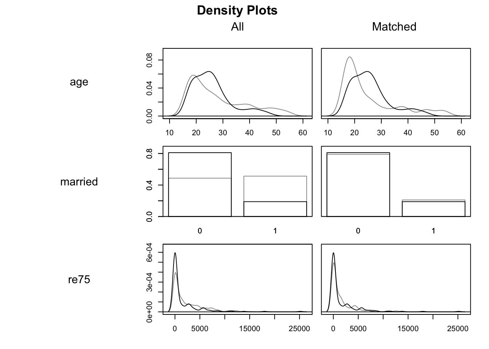
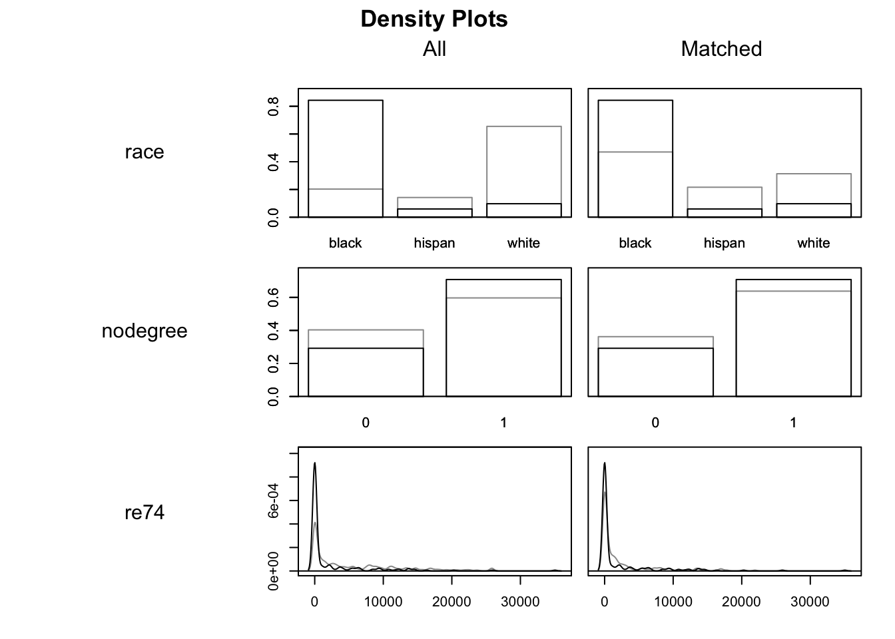
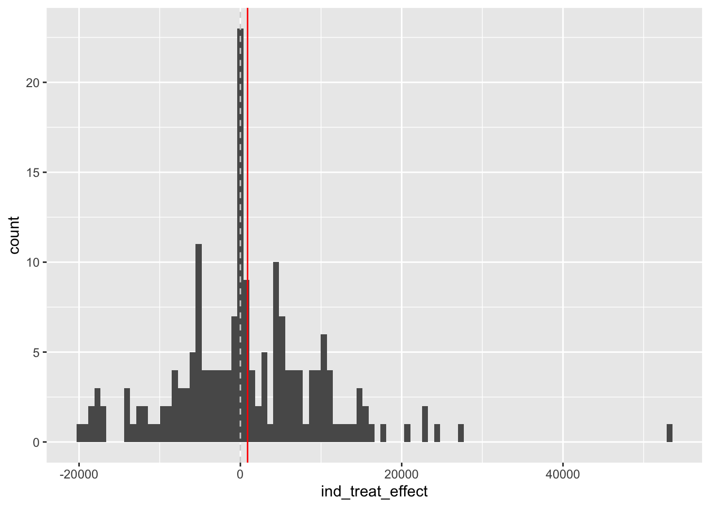

{kind=link}
Code
e_y_z1 <- mean(c(4.8, 3.7, 3.1))
e_y_z0 <- mean(c(2.3, 3.4, 2.9))
# And the difference?
e_y_z1 - e_y_z0[1] 1There are broadly two schools of thought when it comes to thinking about the problems of causal inference. One which interprets the challenge of causal inference mainly as a missing data problem; and another which interprets it mainly in terms of a modelling problem. The posts in this series are largely drawn from the missing data interpretation. If you want an overview of the two approaches (albeit subject to my own ignorance and biases), please skip briefly to the end of these notes before continuing.

A few minutes’ walk from where I live is St Andrew Square. And in the middle of St Andrew Square is the Melville Monument, a 40 metre tall column, on which stands a statue of Henry Dundas, 1st Viscount Melville.
Though the Melville Monument was constructed in the 19th century to commemorate and celebrate this 18th century figure, in 2020 the City of Edimburgh Council chose to add more context to Dundas’ legacy by unveiling a plaque with the following message::
At the top of this neoclassial column stands a statue of Hentry Dundas, 1st Viscount Melville (1742-1811). He was the Scottish Lord Advocate, an MP for Edinburgh and Midlothian, and the First Lord of the Admiralty. Dundas was a contentious figure, provoking controversies that resonate to this day. While Home Secretary in 1792, and first Secretary of State for War in 1796 he was instrumental in deferring the abolition of the Atlantic slave trade. Slave trading by British ships was not abolished until 1807. As a result of this delay, more than half a million enslaved Africans crossed the Atlantic.
So, the claim of the council plaque was that Dundas caused the enslavement of hundreds of thousands of Africans, by promoting a gradualist policy of abolition.
The descendents of Dundas contested these claims, however, instead arguing:
The claim that Henry Dundas caused the enslavement of more than half a million Africans is patently false. The truth is: Dundas was the first MP to advocate in Parliament for the emancipation of slaves in the British territories along with the abolition of the slave trade. Dundas’s efforts resulted in the House of Commons voting in favour of ending the Atlantic slave trade for the first time in its history.
So, the claim of the descendents was that Dundas prevented the enslavement of (at least) hundreds of thousands of Africans, by promoting a gradualist policy of abolition.
How can the same agreed-upon historical facts lead to such diametrically opposing interpretations of the effects of Dundas and his actions?
The answer to this question is at the heart of causal inference, and an example of why, when trying to estimate causal effects, at least half of the data are always missing.
Both parties in the Dundas debate have, as mentioned, access to the same historical facts. They agree on the same observed historical reality. And both are making bold claims about the impact of Dundas in relation to the Transatlantic slave trade. In doing this, they are both comparing this observed historical reality with something else: the unobserved counterfactual.
The unobserved counterfactual is the data that would have been observed if what had happened, hadn’t happened 1 However, what happened did happen, so this data isn’t observed. So, as it hasn’t been observed, it doesn’t exist in any historic facts. Instead, the unobserved counterfactual has to be imputed, or inferred… in effect, made up.
Causal inference always involves some kind of comparison between an observed reality and an unobserved counterfactual. The issue at heart of the Dundas debate is that both parties have compared the observed reality with a different unobserved counterfactual, and from this different Dundas effects have been inferred.
For the council, the unobserved counterfactual appears to be something like the following:
Dundas doesn’t propose a gradualist amendment to a bill in parliament. The more radical and rapid version of the bill passes, and slavery is abolished earlier, leading to fewer people becoming enslaved.
Whereas for the descendents, the unobserved counterfactual appears to be something like this:
Dundas doesn’t propose a gradualist amendment to a bill in parliament. Because of this, the more radical version of the bill doesn’t have enough support in parliament (perhaps because it would be acting too much against the financial interests of some parliamentarians and powerful business interests), and so is defeated. As a result of this, the abolition of slavery is delayed, leading to more people becoming enslaved.
So, by having the same observed historical facts, the observed Dundas, but radically different counterfactuals, the two parties have used the same methodology to derive near antithetical estimates of the ‘Dundas Effect’.
The first stage when using a statistical model is to take a big rectangle of data, \(D\), and split the columns of the data into two types:
With the predictor variables and the response variables defined, the challenge of model fitting is then to find some combination of model parameters \(\theta\) that minimises in some way the gap between the observed response values \(y\), and the predicted response values from the model \(Y\).
The first point to note is that, from the perspective of the model, it does not matter which variable or variables from \(D\) we choose to put in the predictor side \(X\) or the response side \(y\). Even if we put a variable from the future in as a predictor of something in the past, the optimisation algorithms will still work in exactly the same way, working to minimise the gap between observed and predicted responses. The only problem is such a model would make no sense from a causal perspective.
The model also does not ‘care’ about how we think about and go about defining any of the variables that go into the predictor side of the equation, \(X\). But again, we do. In particular, when thinking about causality it can be immensely helpful to imagine splitting the predictor columns up into some conceptually different types. This will be helpful for thinking about causal inference using some algebra.
In some previous expressions of the data, \(D\), we used the subscript \(i\) to indicate the rows of the data which go into the model. Each of these rows is, by convention, a different observation. So, instead of saying the purpose of the model is to predict \(y\) on \(X\), it’s more precisely to predict \(y_i\) on \(X_i\), for all \(i\) in the data (i.e. all rows in \(D\)).
Now let’s do some predictor variable fission and say, for our purposes, that:
\[ X_i = \{X_i^*, Z_i\} \]
Here \(Z_i\) is an assignment variable, and takes either a value of 1, meaning ‘is assigned’, or 0, meaning ‘is not assigned’. The variable \(X_i^*\), by contrast, means ‘all other predictor variables’.
For individual observations \(D_i\) where \(Z_i = 1\), the individual is exposed (or treated) to something. And for individual observations \(D_i\) where \(Z_i = 0\), the individual is not exposed (or not treated) to that thing.
The causal effect of assignment, or treatment, for any individual observation is:
\[ TE_i = y_i|(X_i^*, Z = 1) - y_i| (X_i^*, Z = 0) \]
The fundamental problem of causal inference, however, is that for any individual observation \(i\), one of the two parts of this expression is always missing. If an individual \(i\) had been assigned, then \(y_i|(X_i^*, Z=1)\) is observed, but \(y_i|(X_i^*, Z=0)\) is unobserved. By contrast, if an individual \(i\) had not been assigned, then \(y_i|(X_i^*, Z=0)\) is observed, but \(y_i|(X_i^*, Z=1)\) is unobserved.
Another way to think about this is as a table, where the treatment effect for an individual involves comparing the outcomes reported in two columns of the same row, but the cells in one of these two columns is always missing:
| individual | outcome if treated | outcome if not treated | treatment effect |
|---|---|---|---|
| 1 | 4.8 | ?? | ?? |
| 2 | 3.7 | ?? | ?? |
| 3 | ?? | 2.3 | ?? |
| 4 | 3.1 | ?? | ?? |
| 5 | ?? | 3.4 | ?? |
| 6 | ?? | 2.9 | ?? |
The Platinum Standard of causal effect estimation would therefore be if the missing cells in the outcome columns could be accurately filled in, allowing the treatment effect for each individual to be calculated.
However, this isn’t possible. It’s social science fiction, as we can’t split the universe and compare parallel realities: one in which what happened didn’t happen, and the other in which what didn’t happen happened.
So, what can be done?
There’s one thing you might be tempted to do with the kind of data shown in the table above: compare the average outcome in the treated group with the average outcome in the untreated group, i.e.:
\[ ATE = E(y | Z = 1) - E(y | Z = 0) \]
Let’s do this with the example above:
e_y_z1 <- mean(c(4.8, 3.7, 3.1))
e_y_z0 <- mean(c(2.3, 3.4, 2.9))
# And the difference?
e_y_z1 - e_y_z0[1] 1In this example, the difference in the averages between the two groups is 1.0.2 Based on this, we might imagine the first individual, who was treated, would have had a score of 3.8 rather than 4.8, and the third individual, who was not treated, would have received a score of 3.3 rather than 2.3 if they had been treated.
So, what’s the problem with just comparing the averages in this way? Potentially, nothing. But potentially, a lot. It depends on the data and the problem. More specifically, it depends on the relationship between the assignment variable, \(Z\), and the other characteristics of the individual, which includes but is not usually entirely captured by the known additional characteristics of the individual, \(X_i^*\).
Let’s give a specific example: What if I were to tell you that the outcomes \(y_i\) were waiting times at public toilets/bathrooms, and the assignment variable, \(Z\), takes the value 1 if the individual has been assigned to a facility containing urinals, and 0 if the individual has been assigned to a facility containing no urinals? Would it be right to infer that the difference in the average is the average causal effect of urinals in public toilets/bathrooms?
I’d suggest not, because there are characteristics of the individual which govern assignment to bathroom type. What this means is that \(Z_i\) and \(X_i^*\) are coupled or related to each other in some way. So, any difference in the average outcome between those assigned to (or ‘treated with’) urinals could be due to the urinals themselves; or could be due to other ways that ‘the treated’ and ‘the untreated’ differ from each other systematically. We may be able to observe a difference, and to report that it’s statistically significant. But we don’t know how much, if any, of that difference is due to the exposure or treatment of primary interest to us, and how much is due to other ways in the ‘treated’ and ‘untreated’ groups differ.
So, we need some way of breaking the link between \(Z\) and \(X^*\). How do we do this?
The clue’s in the subheading. Randomised Controlled Trials (RCTs) are known as the Gold Standard for scientific evaluation of effects for a reason, and the reason is this: they’re explicitly designed to break the link between \(Z\) and \(X^*\). And not just \(X^*\), but any unobserved or unincluded characteristics of the individuals, \(W^*\), which might also otherwise influence assignment or selection to \(Z\) but we either couldn’t measure or didn’t choose to include.
The key idea of an RCT is that assignment to either a treated or untreated group, or to any additional arms of the trial, has nothing to do with the characteristics of any individual in the trial. Instead, the allocation is random, determined by a figurature (or historically occasionally literal) coin toss. 3
What this random assignment means is that assignment \(Z\) should be unrelated to the known characteristics \(X^*\), as well as unknown characteristics \(W^*\). The technical term for this (if I remember correctly) is that assignment is orthogonal to other characteristics, represented algebraically as \(Z \perp X^*\) and \(Z \perp W^*\).
This doesn’t mean that, for any particular trial, there will be zero correlation between \(Z\) and other characteristics. Nor does it mean that the characteristics of participants will be the same across trial arms. Because of random variation there are always going to be differences between arms in any specific RCT. However, we know that, because we are aware of the mechanism used to allocate participants to treated or non-treated groups (or more generally to trial arms), the expected difference in characteristics will be zero across many RCTs. Along with increased observations, this is the reason why, in principle, a meta-analysis of methodologically identical RCTs should offer even greater precision as to the causal effect of a treatment than just relying on a single RCT. 4
A key point to note is that, when analysing a properly conducted RCT to estimate a treatment effect, the ATE formula shown above, which is naive and likely to be biased when working with observational data, is likely to produce an unbiased estimate of the treatment effect. Because the trial design is sophisticated in the way it breaks the link between \(Z\) and everything else, the statistical analysis does not have to be sophisticated.
The flip side of this, however, is that when the data are observational, and it would be naive (as with the urinals and waiting times example) to assume that \(Z\) is unlinked to everything else known (\(X^*\)) and unknown (\(W^*\)), then more careful and bespoke statistical modelling approaches are likely to be required to recover non-biased causal effects. Such modelling approaches need to be mindful of both the platinum and gold standards presented above, and rely on modelling and other assumptions to try to simulate what the treatment effects would be if these unobtainable (platinum) and unobtained (gold) standards had been obtained.
This post will go explore some application of the first two approaches: controlling for variables using multiple regression; and using matching methods. A fuller consideration of the issues is provided in Ho et al. (2007), and the main package and dataset used will be that of the associated MatchIt package Ho et al. (2011) and vignette using the lalonde dataset.
We start by loading the Matchit package and exploring the lalonde dataset.
library(tidyverse)
library(MatchIt)
unmatched_data <- tibble(lalonde)
unmatched_data# A tibble: 614 × 9
treat age educ race married nodegree re74 re75 re78
<int> <int> <int> <fct> <int> <int> <dbl> <dbl> <dbl>
1 1 37 11 black 1 1 0 0 9930.
2 1 22 9 hispan 0 1 0 0 3596.
3 1 30 12 black 0 0 0 0 24909.
4 1 27 11 black 0 1 0 0 7506.
5 1 33 8 black 0 1 0 0 290.
6 1 22 9 black 0 1 0 0 4056.
7 1 23 12 black 0 0 0 0 0
8 1 32 11 black 0 1 0 0 8472.
9 1 22 16 black 0 0 0 0 2164.
10 1 33 12 white 1 0 0 0 12418.
# ℹ 604 more rowsThe description of the lalonde dataset is as follows:
help(lalonde)Description
This is a subsample of the data from the treated group in the National Supported Work Demonstration (NSW) and the comparison sample from the Population Survey of Income Dynamics (PSID). This data was previously analyzed extensively by Lalonde (1986) and Dehejia and Wahba (1999).
Format
A data frame with 614 observations (185 treated, 429 control). There are 9 variables measured for each individual.
“treat” is the treatment assignment (1=treated, 0=control).
“age” is age in years.
“educ” is education in number of years of schooling.
“race” is the individual’s race/ethnicity, (Black, Hispanic, or White). Note previous versions of this dataset used indicator variables
blackandhispaninstead of a single race variable.“married” is an indicator for married (1=married, 0=not married).
“nodegree” is an indicator for whether the individual has a high school degree (1=no degree, 0=degree).
“re74” is income in 1974, in U.S. dollars.
“re75” is income in 1975, in U.S. dollars.
“re78” is income in 1978, in U.S. dollars.
“treat” is the treatment variable, “re78” is the outcome, and the others are pre-treatment covariates.
Let’s look at the data to get a sense of it:
unmatched_data |>
mutate(treat = as.factor(treat)) |>
filter(re78 < 25000) |>
ggplot(aes(y = re78, x = re75, shape = treat, colour = treat)) +
geom_point() +
geom_abline(intercept = 0, slope = 1) +
coord_equal() +
stat_smooth(se = FALSE, method = "lm")
Clearly this is quite complicated data, where the single implied control, wages in 1975 (re75) is not sufficient. There are also a great many observations where wages in either of both years were 0, hence the horizontal and vertical streaks apparent.
The two lines are the linear regression lines for the two treatment groups as a function of earlier wage. The lines are not fixed to have the same slope, so the differences in any crude treatment effect estimate vary by earlier wage, but for most previous wages the wages in 1978 appear to be lower in the treatment group (blue), than the control group (red). This would suggest either that the treatment may be harmful to wages… or that there is severe imbalance between the characteristics of persons in both treatment conditions.
Let’s now start to use a simple linear regression to estimate an average treatment effect, before adding more covariates to see how these model-derived estimates change
# Model of treatment assignment only
mod_01 <- lm(re78 ~ treat, unmatched_data)
summary(mod_01)
Call:
lm(formula = re78 ~ treat, data = unmatched_data)
Residuals:
Min 1Q Median 3Q Max
-6984 -6349 -2048 4100 53959
Coefficients:
Estimate Std. Error t value Pr(>|t|)
(Intercept) 6984.2 360.7 19.362 <2e-16 ***
treat -635.0 657.1 -0.966 0.334
---
Signif. codes: 0 '***' 0.001 '**' 0.01 '*' 0.05 '.' 0.1 ' ' 1
Residual standard error: 7471 on 612 degrees of freedom
Multiple R-squared: 0.001524, Adjusted R-squared: -0.0001079
F-statistic: 0.9338 on 1 and 612 DF, p-value: 0.3342On average the treated group had (annual?) wages $635 lower than the control group. However the difference is not statistically significant.
Now let’s add previous wage from 1975
mod_02 <- lm(re78 ~ re75 + treat, unmatched_data)
summary(mod_02)
Call:
lm(formula = re78 ~ re75 + treat, data = unmatched_data)
Residuals:
Min 1Q Median 3Q Max
-15918 -5457 -2025 3824 54103
Coefficients:
Estimate Std. Error t value Pr(>|t|)
(Intercept) 5547.63718 412.84637 13.438 < 2e-16 ***
re75 0.58242 0.08937 6.517 1.5e-10 ***
treat -90.79498 641.40291 -0.142 0.887
---
Signif. codes: 0 '***' 0.001 '**' 0.01 '*' 0.05 '.' 0.1 ' ' 1
Residual standard error: 7230 on 611 degrees of freedom
Multiple R-squared: 0.06642, Adjusted R-squared: 0.06336
F-statistic: 21.73 on 2 and 611 DF, p-value: 7.611e-10Previously observed wage is statistically significant and positive. The point estimate on treatment is smaller, and even less ‘starry’.
Now let’s add all possible control variables and see what the treatment effect estimate produced is:
mod_03 <- lm(re78 ~ re75 + age + educ + race + married + nodegree + re74 + treat, unmatched_data)
summary(mod_03)
Call:
lm(formula = re78 ~ re75 + age + educ + race + married + nodegree +
re74 + treat, data = unmatched_data)
Residuals:
Min 1Q Median 3Q Max
-13595 -4894 -1662 3929 54570
Coefficients:
Estimate Std. Error t value Pr(>|t|)
(Intercept) -1.174e+03 2.456e+03 -0.478 0.6328
re75 2.315e-01 1.046e-01 2.213 0.0273 *
age 1.298e+01 3.249e+01 0.399 0.6897
educ 4.039e+02 1.589e+02 2.542 0.0113 *
racehispan 1.740e+03 1.019e+03 1.708 0.0882 .
racewhite 1.241e+03 7.688e+02 1.614 0.1071
married 4.066e+02 6.955e+02 0.585 0.5590
nodegree 2.598e+02 8.474e+02 0.307 0.7593
re74 2.964e-01 5.827e-02 5.086 4.89e-07 ***
treat 1.548e+03 7.813e+02 1.982 0.0480 *
---
Signif. codes: 0 '***' 0.001 '**' 0.01 '*' 0.05 '.' 0.1 ' ' 1
Residual standard error: 6948 on 604 degrees of freedom
Multiple R-squared: 0.1478, Adjusted R-squared: 0.1351
F-statistic: 11.64 on 9 and 604 DF, p-value: < 2.2e-16With all of these variables as controls, the effect of treatment is now statistically significant and positive, associated with on average an increase of $155 over the control group.
However, we should probably be concerned about how dependent this estimate is on the specific model specification we used. For example, it is fairly common to try to ‘control for’ nonlinearities in age effects by adding a squared term. If modeller decisions like this don’t make much difference, then its addition shouldn’t affect the treatment effect estimate. Let’s have a look:
mod_04 <- lm(re78 ~ re75 + poly(age, 2) + educ + race + married + nodegree + re74 + treat, unmatched_data)
summary(mod_04)
Call:
lm(formula = re78 ~ re75 + poly(age, 2) + educ + race + married +
nodegree + re74 + treat, data = unmatched_data)
Residuals:
Min 1Q Median 3Q Max
-13692 -4891 -1514 3884 54313
Coefficients:
Estimate Std. Error t value Pr(>|t|)
(Intercept) -5.395e+02 2.172e+03 -0.248 0.8039
re75 2.190e-01 1.057e-01 2.072 0.0387 *
poly(age, 2)1 3.895e+03 7.994e+03 0.487 0.6262
poly(age, 2)2 -6.787e+03 7.918e+03 -0.857 0.3917
educ 3.889e+02 1.599e+02 2.432 0.0153 *
racehispan 1.682e+03 1.021e+03 1.648 0.0999 .
racewhite 1.257e+03 7.692e+02 1.634 0.1028
married 2.264e+02 7.267e+02 0.312 0.7555
nodegree 3.185e+02 8.504e+02 0.375 0.7081
re74 2.948e-01 5.832e-02 5.055 5.73e-07 ***
treat 1.369e+03 8.090e+02 1.692 0.0911 .
---
Signif. codes: 0 '***' 0.001 '**' 0.01 '*' 0.05 '.' 0.1 ' ' 1
Residual standard error: 6949 on 603 degrees of freedom
Multiple R-squared: 0.1488, Adjusted R-squared: 0.1347
F-statistic: 10.54 on 10 and 603 DF, p-value: < 2.2e-16The inclusion of the squared term to age has changed the point estimate of treatment from around $1550 to $1370. However it has also changed the statistical significance of the effect from p < 0.05 to p < 0.10, i.e. from ‘statistically significant’ to ‘not statistically significant’. If we were playing the stargazing game, this might be the difference between a publishable finding and an unpublishable finding.
And what if we excluded age, because none of the terms are statistically significant at the standard level?
mod_05 <- lm(re78 ~ re75 + educ + race + married + nodegree + re74 + treat, unmatched_data)
summary(mod_05)
Call:
lm(formula = re78 ~ re75 + educ + race + married + nodegree +
re74 + treat, data = unmatched_data)
Residuals:
Min 1Q Median 3Q Max
-13681 -4912 -1652 3877 54648
Coefficients:
Estimate Std. Error t value Pr(>|t|)
(Intercept) -676.43048 2115.37702 -0.320 0.7493
re75 0.22705 0.10395 2.184 0.0293 *
educ 389.00786 154.33865 2.520 0.0120 *
racehispan 1710.16654 1015.15590 1.685 0.0926 .
racewhite 1241.00510 768.22972 1.615 0.1067
married 478.55017 671.28910 0.713 0.4762
nodegree 201.04497 833.99164 0.241 0.8096
re74 0.30209 0.05645 5.351 1.24e-07 ***
treat 1564.68896 779.65173 2.007 0.0452 *
---
Signif. codes: 0 '***' 0.001 '**' 0.01 '*' 0.05 '.' 0.1 ' ' 1
Residual standard error: 6943 on 605 degrees of freedom
Multiple R-squared: 0.1475, Adjusted R-squared: 0.1363
F-statistic: 13.09 on 8 and 605 DF, p-value: < 2.2e-16Now the exclusion of this term, which the coefficient tables suggested wasn’t statistically significant, but intuitively we recognise as an important determinant of labour market activity, has led to yet another point estimate. It’s switched back to ‘statistically significant’ again, but now the point estimate is about $1565 more. Such estimates aren’t vastly different, but they definitely aren’t the same, and come from just a tiny same of the potentially hundreds of different model specifications we could have considered and decided to present to others.
As the title of Ho et al. (2007) indicates, matching methods are presented as a way of preprocessing the data to reduce the kind of model dependence we’ve just started to explore. Let’s run the first example they present in the MatchIt vignette then discuss what it means:
m.out0 <- matchit(treat ~ age + educ + race + married +
nodegree + re74 + re75, data = lalonde,
method = NULL, distance = "glm")
summary(m.out0)
Call:
matchit(formula = treat ~ age + educ + race + married + nodegree +
re74 + re75, data = lalonde, method = NULL, distance = "glm")
Summary of Balance for All Data:
Means Treated Means Control Std. Mean Diff. Var. Ratio eCDF Mean
distance 0.5774 0.1822 1.7941 0.9211 0.3774
age 25.8162 28.0303 -0.3094 0.4400 0.0813
educ 10.3459 10.2354 0.0550 0.4959 0.0347
raceblack 0.8432 0.2028 1.7615 . 0.6404
racehispan 0.0595 0.1422 -0.3498 . 0.0827
racewhite 0.0973 0.6550 -1.8819 . 0.5577
married 0.1892 0.5128 -0.8263 . 0.3236
nodegree 0.7081 0.5967 0.2450 . 0.1114
re74 2095.5737 5619.2365 -0.7211 0.5181 0.2248
re75 1532.0553 2466.4844 -0.2903 0.9563 0.1342
eCDF Max
distance 0.6444
age 0.1577
educ 0.1114
raceblack 0.6404
racehispan 0.0827
racewhite 0.5577
married 0.3236
nodegree 0.1114
re74 0.4470
re75 0.2876
Sample Sizes:
Control Treated
All 429 185
Matched 429 185
Unmatched 0 0
Discarded 0 0With method = NULL, the matchit function presents some summary estimates of differences in characteristics between the Treatment and Control groups. For example, the treated group has an average age of around 25, compared with 28 in the control group, have a slightly higher education score, are more likely to be Black, less likely to be Hispanic, and much less likely to be White (all important differences in the USA context, especially perhaps of the 1970s). They are also less likely to be married, more likely to have no degree, and have substantially earlier wages in both 1974 and 1975. Clearly a straightforward comparision between average outcomes is far from a like-with-like comparisons between groups. The inclusion of other covariates (\(X^*\)) does seem to have made a difference, switching the reported direction of effect and its statistical significance, but if we could find a subsample of the control group whose characteristics better match those of the treatment groups, we would hopefully get a more precise and reliable estimate of the effect of the labour market programme.
The next part of the vignette shows MatchIt working with some fairly conventional settings:
m.out1 <- matchit(treat ~ age + educ + race + married +
nodegree + re74 + re75, data = lalonde,
method = "nearest", distance = "glm")
m.out1A matchit object
- method: 1:1 nearest neighbor matching without replacement
- distance: Propensity score
- estimated with logistic regression
- number of obs.: 614 (original), 370 (matched)
- target estimand: ATT
- covariates: age, educ, race, married, nodegree, re74, re75The propensity score, i.e. the probability of being in the treatment group, has been predicted using the other covariates, and using logistic regression. For each individual in the treatment group, a ‘nearest neighbour’ in the control group has been identified with the most similar propensity score, which we hope also will also mean the characteristics of the treatment group, and matched pairs from the control group, will be more similar too.
We can start to see what this means in practice by looking at the summary of the above object
summary(m.out1)
Call:
matchit(formula = treat ~ age + educ + race + married + nodegree +
re74 + re75, data = lalonde, method = "nearest", distance = "glm")
Summary of Balance for All Data:
Means Treated Means Control Std. Mean Diff. Var. Ratio eCDF Mean
distance 0.5774 0.1822 1.7941 0.9211 0.3774
age 25.8162 28.0303 -0.3094 0.4400 0.0813
educ 10.3459 10.2354 0.0550 0.4959 0.0347
raceblack 0.8432 0.2028 1.7615 . 0.6404
racehispan 0.0595 0.1422 -0.3498 . 0.0827
racewhite 0.0973 0.6550 -1.8819 . 0.5577
married 0.1892 0.5128 -0.8263 . 0.3236
nodegree 0.7081 0.5967 0.2450 . 0.1114
re74 2095.5737 5619.2365 -0.7211 0.5181 0.2248
re75 1532.0553 2466.4844 -0.2903 0.9563 0.1342
eCDF Max
distance 0.6444
age 0.1577
educ 0.1114
raceblack 0.6404
racehispan 0.0827
racewhite 0.5577
married 0.3236
nodegree 0.1114
re74 0.4470
re75 0.2876
Summary of Balance for Matched Data:
Means Treated Means Control Std. Mean Diff. Var. Ratio eCDF Mean
distance 0.5774 0.3629 0.9739 0.7566 0.1321
age 25.8162 25.3027 0.0718 0.4568 0.0847
educ 10.3459 10.6054 -0.1290 0.5721 0.0239
raceblack 0.8432 0.4703 1.0259 . 0.3730
racehispan 0.0595 0.2162 -0.6629 . 0.1568
racewhite 0.0973 0.3135 -0.7296 . 0.2162
married 0.1892 0.2108 -0.0552 . 0.0216
nodegree 0.7081 0.6378 0.1546 . 0.0703
re74 2095.5737 2342.1076 -0.0505 1.3289 0.0469
re75 1532.0553 1614.7451 -0.0257 1.4956 0.0452
eCDF Max Std. Pair Dist.
distance 0.4216 0.9740
age 0.2541 1.3938
educ 0.0757 1.2474
raceblack 0.3730 1.0259
racehispan 0.1568 1.0743
racewhite 0.2162 0.8390
married 0.0216 0.8281
nodegree 0.0703 1.0106
re74 0.2757 0.7965
re75 0.2054 0.7381
Sample Sizes:
Control Treated
All 429 185
Matched 185 185
Unmatched 244 0
Discarded 0 0Previously, there were 185 people in the treatment group, and 429 people in the control group. After matching there are 185 people in the treatment group… and also 185 people in the control group. So, each of the 185 people in the treatment group has been matched up with a ‘data twin’ in the control group, so the ATT should involve more of a like-with-like comparison.
The summary presents covariate-wise differences between the Treatment and Control groups for All Data, then for Matched Data. We would hope that, in the Matched Data, the differences are smaller for each covariate, though this isn’t necessarily the case. After matching, for example, we can see that the Black proportion in the Control group is now 0.47 rather than 0.20, and that the earlier income levels are lower, in both cases bringing the values in the Control group closer to, but not identical to, those in the Treatment group. Another way of seeing how balancing has changed things is to look at density plots:
plot(m.out1, type = "density", interactive = FALSE,
which.xs = ~age + married + re75+ race + nodegree + re74)

In these density charts, the darker lines indicate the Treatment group and the lighter lines the Control groups. The matched data are on the right hand side, with All data on the left. We are looking to see if, on the right hand side, the two sets of density lines are more similar than they are on the right. Indeed they do appear to be, though we can also tell they are far from identical.
Historically, the MatchIt package was designed to work seamlessly with Zelig, which made it much easier to use a single library and framework to produce ‘quantities of interest’ using multiple model structures. However Zelig has since been deprecated, meaning the vignette now recommends using the marginaleffects package. We’ll follow their lead:
First the vignette recommends extracting matched data from the matchit output:
m.data <- match.data(m.out1)
m.data <- as_tibble(m.data)
m.data# A tibble: 370 × 12
treat age educ race married nodegree re74 re75 re78 distance weights
<int> <int> <int> <fct> <int> <int> <dbl> <dbl> <dbl> <dbl> <dbl>
1 1 37 11 black 1 1 0 0 9930. 0.639 1
2 1 22 9 hispan 0 1 0 0 3596. 0.225 1
3 1 30 12 black 0 0 0 0 24909. 0.678 1
4 1 27 11 black 0 1 0 0 7506. 0.776 1
5 1 33 8 black 0 1 0 0 290. 0.702 1
6 1 22 9 black 0 1 0 0 4056. 0.699 1
7 1 23 12 black 0 0 0 0 0 0.654 1
8 1 32 11 black 0 1 0 0 8472. 0.790 1
9 1 22 16 black 0 0 0 0 2164. 0.780 1
10 1 33 12 white 1 0 0 0 12418. 0.0429 1
# ℹ 360 more rows
# ℹ 1 more variable: subclass <fct>Whereas the unmatched data contains 614 observations, the matched data contains 370 observations. Note that the Treatment group contained 185 observations, and that 370 is 185 times two. So, the matched data contains one person in the Control group for each person in the Treatment group.
We can also see that, in addition to the metrics originally included, the matched data contains three additional variables: ‘distance’, ‘weights’ and ‘subclass’. The ‘subclass’ field is perhaps especially useful for understanding the intuition of the approach, because it helps show which individual in the Control group has been paired with which individual in the Treatment group. Let’s look at the first three subgroups:
m.data |> filter(subclass == '1')# A tibble: 2 × 12
treat age educ race married nodegree re74 re75 re78 distance weights
<int> <int> <int> <fct> <int> <int> <dbl> <dbl> <dbl> <dbl> <dbl>
1 1 37 11 black 1 1 0 0 9930. 0.639 1
2 0 22 8 black 1 1 16961. 0 959. 0.203 1
# ℹ 1 more variable: subclass <fct>So, for the first subclass, a 37 year old married Black person with no degree has been matched to a 22 year old Black married person with no degree.
m.data |> filter(subclass == '2')# A tibble: 2 × 12
treat age educ race married nodegree re74 re75 re78 distance weights
<int> <int> <int> <fct> <int> <int> <dbl> <dbl> <dbl> <dbl> <dbl>
1 1 33 12 white 1 0 0 0 12418. 0.0429 1
2 0 39 12 white 1 0 1289. 0 1203. 0.0430 1
# ℹ 1 more variable: subclass <fct>For the second subclass a 33 year old married White person with a degree has been paired with a 39 year old White person with a degree.
m.data |> filter(subclass == '3')# A tibble: 2 × 12
treat age educ race married nodegree re74 re75 re78 distance weights
<int> <int> <int> <fct> <int> <int> <dbl> <dbl> <dbl> <dbl> <dbl>
1 1 31 9 hispan 0 1 0 0 26818. 0.250 1
2 0 16 10 white 0 1 0 190. 2137. 0.105 1
# ℹ 1 more variable: subclass <fct>For the third subclass, a 31 year old unmarried Hispanic person with no degree has been paired with a 16 year old White person with no degree.
In each case, we can see the pairings are similar in some ways but (as with the last example) quite dissimilar in others. The matching algorithm is trying to do the best it can with the data available, especially with the constraint5 that once a person in the Control group has been paired up once to someone in the Treatment group, they can’t be paired up again with someone else in the Treatment group.
The identification of these specific pairings suggests we can used a fairly crude strategy to produce an estimate of the ATT: namely just compare the outcome across each of these pairs. Let’s have a look at this:
trt_effects <-
m.data |>
group_by(subclass) |>
summarise(
ind_treat_effect = re78[treat == 1] - re78[treat == 0]
) |>
ungroup()
trt_effects |>
ggplot(aes(ind_treat_effect)) +
geom_histogram(bins = 100) +
geom_vline(xintercept = mean(trt_effects$ind_treat_effect), colour = "red") +
geom_vline(xintercept = 0, colour = 'lightgray', linetype = 'dashed')
This crude paired comparison suggests an average difference that’s slightly positive, of $894.37.
This is not a particularly sophisticated or ‘kosher’ approach however. Instead the vignette suggests calculating the treatment effect estimate as follows:
library("marginaleffects")
fit <- lm(re78 ~ treat * (age + educ + race + married + nodegree +
re74 + re75), data = m.data, weights = weights)
avg_comparisons(fit,
variables = "treat",
vcov = ~subclass,
newdata = subset(m.data, treat == 1),
wts = "weights")
Term Contrast Estimate Std. Error z Pr(>|z|) S 2.5 % 97.5 %
treat mean(1) - mean(0) 1121 837 1.34 0.181 2.5 -520 2763
Columns: term, contrast, estimate, std.error, statistic, p.value, s.value, conf.low, conf.high, predicted_lo, predicted_hi, predicted
Type: response Using the recommended approach, the ATT estimate is now $1121. Not statistically significant at the conventional 95% threshold, but also more likely to be positive than negative.
In this post we have largely followed along with the introductionary vignette from the MatchIt package, in order to go from the fairly cursory theoretical overview in the previous post, to showing how some of the ideas and methods relating to multiple regression and matching methods work in practice. There are a great many ways that both matching, and multiple regression, can be implemented in practice, and both are likely to affect any causal effect estimates we produce. However, the aspiration of using matching methods is to somewhat reduce the dependency that causal effect estimates have on the specific model specifications we used.
Readers who’ve been involved and interested in the topic of causal inference over the last few years might be less surprised by what I have covered than by what I’ve not, namely the causal inference framework developed by Judea Pearl, and (somewhat) popularised by his co-authored book, The Book of Why: The New Science of Cause and Effect. (Pearl and Mackenzie (2018))
This ‘oversight’ in posts so far has been intentional, but in this post the Pearl framework will finally be discussed. I’ll aim to: i) give an overview of the two primary ways of thinking about causal inference: either as a missing data problem; or as a ‘do-logic’ problem; ii) discuss the concept of the omitted variable vs post treatment effect bias trade-off as offering something of a bridge between the two paradigms; iii) give some brief examples of directed acyclic graphs (DAGs) and do-logic, two important ideas from the Pearl framework, as described in Pearl and Mackenzie (2018); iv) make some suggestions about the benefits and uses of the Pearl framework; and finally v) advocate for epistemic humility when it comes to trying to draw causal inferences from observational data, even where a DAG has been clearly articulated and agreed upon within a research community. 6 Without further ado, let’s begin:
In the posts so far, I’ve introduced and kept returning to the idea that the fundamental problem of causal inference is that at least half of the data is always missing. i.e., for each individual observation, who has either been treated or not treated, if they had been treated then we do not observe them in the untreated state, and if they had not been treated we do not observe them in the treated state. It’s this framing of the problem which
In introducing causal inference from this perspective, I’ve ‘taken a side’ in an ongoing debate, or battle, or even war, between two clans of applied epistemologists. Let’s call them the Rubinites, and the Pearlites. Put crudely, the Rubinites adopt a data-centred framing of the challenge of causal inference, whereas the Pearlites adopt a model-centred framing of the challenge of causal inference. For the Rubinites, the data-centred framing leads to an intepretation of causal inference as a missing data problem, for which the solution is therefore to perform some kind of data imputation. For the Pearlites, by contrast, the solution is focused on developing, describing and drawing out causal models, which describe how we believe one thing leads to another and the paths of effect and influence that one variable has on each other variable.
It is likely no accident that the broader backgrounds and interests of Rubin and Pearl align with type of solution each proposes. Rubin’s other main interests are in data imputation more generally, including methods of multiple imputation which allow ‘missing values’ to be filled in stochastically, rather than deterministically, to allow some representation of uncertainty and variation in the missing values to be indicated by the range of values that are generated for a missing hole in the data. Pearl worked as a computer scientist, whose key contribution to the field was the development of Bayesian networks, which share many similarities with neural networks. For both types of network, there are nodes, and there are directed links. The nodes have values, and these values can be influenced and altered by the values of other nodes that are connected to the node in question. This influence that each node has on other nodes, through the paths indicated in the directed links, is perhaps more likely to be described as updating from the perspective of a Bayesian network, and propagation from the perspective of a neural network. But in either case, it really is correct to say that one node really does cause another node’s value to change through the causal pathway of the directed link. The main graphical tool Pearl proposes for reasoning about causality in obervational data is the directed acyclic graph (DAG), and again it should be unsurprising that DAGs look much like Bayesian networks.
The school of inference I’m most familiar with is that of Gary King, a political scientist, methodologist and (in the hallowed halls of Harvard) populariser of statistical methods in the social sciences. In the crude paradigmatic split I’ve sketched out above, King is a Rubinite, and so I guess - mainly through historical accident but partly through conscious decision - I am too. However, I have read Pearl and Mackenzie (2018) (maybe not recently enough nor enough times to fully digest it), consider it valuable and insightful in many places, and think there’s at least one place where the epistemic gap between the two paradigms can be bridged.
The bridge point on the Rubinite side,7 I’d suggest, comes from thinking carefully about the sources of bias enumerated in section 3.2 of King and Zeng (2006), which posits that:
\[ bias = \Delta_o + \Delta_p + \Delta_i + \Delta_e \]
This section states:
These four terms denote exactly the four sources of bias in using observational data, with the subscripts being mnemonics for the components … . The bias components are due to, respectively, omitted variable bias (\(\Delta_o\)), post-treatment bias (\(\Delta_p\)), interpolation bias (\(\Delta_i\)) and extrapolation bias (\(\Delta_e\)). [Emphases added]
Of the four sources of bias listed, it’s the first two which appear to offer a potential link between the two paradigms, and so suggest to Rubinites why some engagement with the Pearlite approach may be valuable. The section continues:
Briefly, \(\Delta_o\) is the bias due to omitting relevant variables such as common causes of both the treatment and the outcome variables [whereas] \(\Delta_p\) is bias due to controlling for the consequences of the treatment. [Emphases added]
From the Rubinite perspective, it seems that omitted variable bias and post-treatment bias are recognised, in combination, as constituting a wicked problem. This is because the inclusion of an specific variable can simultaneously affect both types of bias: reducing omitted variable bias, but also potentially increasing post treatment bias. You’re doomed if you do, but you’re also doomed if you don’t.
Of the two sources of bias, omitted variable bias seems to be the more discussed. And historically, it seems different social and health science disciplines have placed a different weight of addressing these two sources of bias. In particular, at least in the UK context, it’s seemed that economists tend to be more concerned about omitted variable bias, leading to the inclusion of a large number of variables in their statistical models, whereas epidemiologists (though they might not be familiar with and use the term) tend to be more concerned about post-treatment bias, leading a statistical models with fewer variables.
The issue of post treatment bias is especially important to consider in the context of root or fundamental causes, which again is often something more of interest to epidemiologists than economists. And the importance of the issue comes into sharp relief if considering factors like sex or race. An economist/econometrician, if asked to estimate the effect of race on (say) the probability of a successful job application to an esteemed organisation, might be very liable to try to include many additional covariates, such as previous work experience and job qualifications, as ‘control variables’ in a statistical model in addition to race. From this, they might find that the covariate associated with race is neither statistically nor substantively, and from this conclude that there is no evidence of (say) racial discrimination in employment, because any disparities in outcomes between racial groups appear to be ‘explained by’ other factors like previous experience and job qualifications.
To this, a methodologically minded epidemiologist might counter - very reasonably - that the econometrician’s model is over-controlling, and that the inclusion of factors like educational outcomes and previous work experience in the model risks introducing post treatment bias. If there were discrimination on the basis of race, or sex, it would be unlikely to just affect the specific outcome on the response side of the model. Instead, discrimination (or other race-based factors) would also likely affect the kind of education available to people of different races, and the kinds of educational expectations placed on people of different racial groups. This would then affect the level of educational achievement by group as well. Similarly, both because of prior differences in educational achievement, and because of concurrent effects of discrimination, race might also be expected to affect job history too. Based on this, the epidemiologist might choose to omit both qualifications and job history from the model, because both are presumed to be causallly downstream of the key factor of interest, race.
So which type of model is correct? The epidemiologist’s more parsimonious model, which is mindful of post-treatment bias, or the economist’s more complicated model, which is mindful of omitted variable bias? The conclusion from the four-biases position laid out above is that we don’t know, but that all biases potentially exist in observational data, and neither model specification can claim to be free from bias. Perhaps both kinds of model can be run, and perhaps looking at the estimates from both models can give something like a plausible range of possible effects. But fundamentally, we don’t know, and can’t know, and ideally we should seek better quality data, run RCTs and so on.
Pearl and Mackenzie (2018) argues that Rubinites don’t see much (or any) value in causal diagrams, stating “The Rubin causal model treats counterfactuals as abstract mathematical objects that are managed by algebraic machinery but not derived from a model.” [p. 280] Though I think this characterisation is broadly consciously correct, the recognition within the Rubinite community that such things as post-treatment bias and omitted variables exist suggests to me that, unconsciously, even Rubinites employ something like path-diagram reasoning when considering which sources of bias are likely to affect their effect estimates. Put simply: I don’t see how claims of either omitted variable or post treatment bias could be made or believed but for the kind of graphical, path-like thinking at the centre of the Pearlite paradigm.
Let’s draw the two types of statistical model implied in the discussion above. Firstly the economist’s model:
flowchart LR race(race) qual(qualifications) hist(job history) accept(job offer) race -->|Z| accept qual -->|X*| accept hist -->|X*| accept
And now the epidemiologist’s model:
flowchart LR race(race) accept(job offer) race -->|Z| accept
Employing a DAG-like causal path diagram would at the very least allow both the economist and epidemiologist to discuss whether or not they agree that the underlying causal pathways are more likely to be something like the follows:
flowchart LR race(race) qual(qualifications) hist(job history) accept(job offer) race --> qual qual --> hist hist --> accept race --> hist qual --> accept race --> accept
If, having drawn out their presumed causal pathways like this, the economist and epidemiologist end up with the same path diagram, then the Pearlian framework offers plenty of suggestions about how, subject to various assumptions about the types of effect each node has on each downstream node, statistical models based on observational data should be specified, and how the values of various coefficients in the statistical model should be combined in order to produce an overall estimate of the left-most node on the right-most node. Even a Rubinite who does not subscribe to some of these assumptions may still find this kind of graphical, path-based reasoning helpful for thinking through what their concerns are relating to both omitted variable and post-treatment biases are, and whether there’s anything they can do about it. In the path diagram above, for example, the importance of temporal sequence appears important: first there’s education and qualification; then there’s initial labour market experience; and then there’s contemporary labour market experience. This appreciation of the sequence of events might suggest that, perhaps, data employing a longitudinal research design might be preferred to one using only cross-sectional data; and/or that what appeared intially to be only a single research question, investigated through a single statistical model, is actually a series of linked, stepped research questions, each employing a different statistical model, breaking down the cause-effect question into a series of smaller steps.
The data that would have been observed if what hadn’t happened, had happened, is the other type of unobserved counterfactual.↩︎
This is pure fluke. I didn’t choose the values to get a difference of exactly 1, but there we go…↩︎
In the gold-plated gold standard of the double-blind RCT, not even the people running the trial and interacting with participants would be aware of which treatment a participant has been assigned. They would simply be given a participant ID, find a pack containing the participant’s treatment, and give this pack to the participant. Only a statistician, who has access to a random number cypher, would know which participants are assigned to which treatment, and they might not know until the trial has concluded. The idea of all of these layers of secrecy in assignment is to reduce the possibility that those running the experiment could intentionally or unintentially inform participants about which treatment they’re receiving, and so create expectations in participants about the effectiveness or otherwise of the treatments, which could have an additional effect on the outcomes.↩︎
In practice, issues like methodological variation, and publication bias, mean that meta-analyses of RCTs are unlikely to provide as accurate and unbiased an estimate of treatment effect as we would hope for.↩︎
I think this is implied by the use of method = "nearest", which is the default, meaning ‘greedy nearest neighbour matching’.↩︎
I might not cover these areas in the order listed above, and thinking about this further this might be too much territory for a single post. Let’s see how this post develops…↩︎
The bridge point on the Pearlite side might be a recognition of the apparent bloody obviousness of the fact that, if an observational unit was treated, we don’t observe untreated, and vice versa. The kind of table with missing cells, as shown earlier, would appear to follow straightforwardly from conceding this point. However, Pearl and Mackenzie (2018) includes an example of this kind of table (table 8.1; p. 273), and argues forcefully against this particular framing.↩︎
The economist’s model is more complicated than the epidemiologist’s model, but both are equally complex, i.e. not complex at all, because they don’t involve any pathways going from right to left.↩︎
A majority of political disagreement, for example, seems to occur when people agree on the facts, but disagree about the primary causal pathway.↩︎